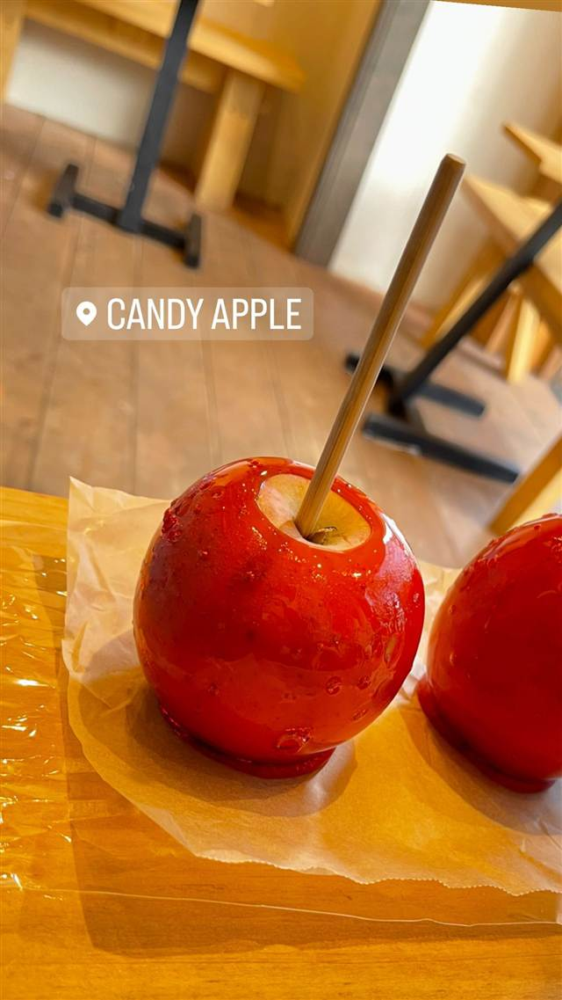

代官山Candy apple
渋谷の日曜限定店から生まれたカットして食べるりんご飴
CANDY APPLE
2018年に渋谷の日曜限定店として始まったりんご飴専門店。カットして食べる斬新なスタイルとドラマ出演で話題となり、代官山の常設店を経て全国・海外に展開する人気店に成長した。
TRIVIA
豆知識
- 元は渋谷での日曜限定の間借り営業から始まった
- ドラマ『恋はつづくよどこまでも』への登場をきっかけに人気に火がついた
- カットして食べるスタイルがSNSで話題になった
REVIEWS
世間の評判
3.16食べログ
りんご飴のジューシーさと薄い飴
- 果汁たっぷりのりんごに薄く飴をかけた上品な味を評価する声が多い
- その場ですぐ食べやすくカットしてくれる心遣いを評価する声が多い
- 飴が溶けやすいため持ち帰りできる時間がおよそ2時間と短いという声もある
食べログ 口コミ147件
| 創業 | 2018年、渋谷の日曜限定店としてスタート後、代官山に常設店を構える |
|---|---|
| 看板 | りんご飴 |
| こだわり | 「本気のりんご飴」を掲げ試行錯誤を重ねた製法。串のまま丸かじりせず、カットして食べる提供スタイル。 |
| どこから | 都心 |
| 行くなら | 行列 |
| 予算 | 昼 ～¥999 夜 ～¥999 |
| 定休日 | 無休 |
| 予約 | 予約可 |
| 場所 | 代官山 東京都渋谷区代官山町8-9 竜王ビル1F |
| メモ | 行列ができる人気店。現在は国内外含め約27店舗まで拡大。 |
食べたもの：りんご飴
NEARBY
近い店・同じ系統の店
-
 イタリアン 代官山駅
リストランテASO
昭和初期の洋館で味わう、樹齢300年の欅を望むコース料理
夜 ¥20,000～¥29,999
イタリアン 代官山駅
リストランテASO
昭和初期の洋館で味わう、樹齢300年の欅を望むコース料理
夜 ¥20,000～¥29,999
-
 メキシコ 代官山駅
Hacienda del cielo MODERN MEXICANO
天井高8mの吹き抜けとテラスから東京タワーを望むモダンメキシカン
昼 ¥1,000～¥1,999 夜 ¥4,000～¥4,999
メキシコ 代官山駅
Hacienda del cielo MODERN MEXICANO
天井高8mの吹き抜けとテラスから東京タワーを望むモダンメキシカン
昼 ¥1,000～¥1,999 夜 ¥4,000～¥4,999
-
 メキシコ 代官山
ZEST CANTINA 代官山
恵比寿の大型店が10年越しに代官山で復活したテックスメックス
昼 ¥1,000～¥1,999 夜 ¥3,000～¥3,999
メキシコ 代官山
ZEST CANTINA 代官山
恵比寿の大型店が10年越しに代官山で復活したテックスメックス
昼 ¥1,000～¥1,999 夜 ¥3,000～¥3,999
-
 ブランチ 代官山
IVY PLACE
本来は白い箱形の予定だった、別荘風の一軒家でパンケーキ
昼 ¥4,000～¥4,999 夜 ¥6,000～¥7,999
ブランチ 代官山
IVY PLACE
本来は白い箱形の予定だった、別荘風の一軒家でパンケーキ
昼 ¥4,000～¥4,999 夜 ¥6,000～¥7,999
-
 コーヒー 代官山駅
DUCT COFFEE LAB（ダクトコーヒーラボ）
注文ごとに一杯ずつ淹れるハンドドリップコーヒー
昼 ¥1,000～¥1,999 夜 ¥1,000～¥1,999
コーヒー 代官山駅
DUCT COFFEE LAB（ダクトコーヒーラボ）
注文ごとに一杯ずつ淹れるハンドドリップコーヒー
昼 ¥1,000～¥1,999 夜 ¥1,000～¥1,999
-
 コーヒー 代官山
it COFFEE 代官山
日本バリスタチャンピオンが淹れる、全て自家焙煎のコーヒー
昼 ～¥999 夜 ～¥999
コーヒー 代官山
it COFFEE 代官山
日本バリスタチャンピオンが淹れる、全て自家焙煎のコーヒー
昼 ～¥999 夜 ～¥999